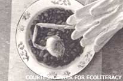

Public school cafeterias have been the butt of jokes for decades, but there is absolutely nothing funny about what the nation's children eat every day.
"There's simply not enough food for thought," said Janet Brown of the Center for Ecoliteracy. Ironically, the institutions charged with teaching children about science and nutrition aren't providing those children with the nutritional requirements countless studies have indicated are necessary for top-notch learning performance. Instead, school cafeterias have become the dumping grounds for commercial agriculture surplus and a training ground for future junk-food dependent consumers. Meanwhile, the time spent on educating children about how food actually makes it to their plastic trays has been evaporating.
But, as Brown says, schools are one place where local action can truly be effective, and in Berkeley, California, a local effort has taken back school lunches and the curriculum. In 1999, Berkeley passed a 12-point plan designed to get more local, organic food into students and to cut out genetically engineered products. So far, Berkeley students have seen the addition of organic apple juice grown in the San Francisco area, and even organic, kid-friendly foods like tortilla chips, peanut butter and graham crackers. The program not only improves the students' nutrition, it improves the local economy by pumping school funds - almost $100,000 according to the nonprofit Center for Ecoliteracy - back to local growers.
"The process is actually restoring authority back to the family and the community," Brown said.
The nutrition helps students be primed for another initiative in the Berkeley schools: learning about sustainable agriculture in one of the district's several organic gardens, including the flagship garden at Martin Luther King, Jr. Middle School. Students, faculty and community volunteers helped to build the gardens, while the students care for the plants that eventually become part of the school's cuisine.
The Center for Ecoliteracy is pushing to spread the program to more of the school districts around its headquarters in Northern California, and another organization is ready to take the campaign nationwide. The Organic Consumers Association, a powerful resource and activist network, recently launched a Safeguard Our Students (SOS) campaign. The SOS campaign has four goals:
1. Kick junk foods and junk food ads out of U.S. schools.
2. Start converting school lunches to healthier menus, using organic and transition to organic ingredients (no pesticides, antibiotics, hormones, irradiation or genetically engineered ingredients).
Offer vegetarian options.
3. Stop spraying toxic pesticides on school grounds and in buildings and convert to integrated pest management practices.
4. Teach students about healthy food choices and sustainable agriculture through school garden projects and curriculum materials.
The association hopes to achieve its goals by providing concerned parents and community members with informational materials like leaflets and template petitions to bring the issue to the attention of members' local communities and school boards. The association also provides free curriculum materials and easy ways to access local legislators on behalf of the effort.
For more information on how you can start the ball rolling in your own community, contact the Organic Consumers Association [ www.purefood.org; (218) 226-4164] or the Center for Ecoliteracy [ www.ecoliteracy.org; (510) 845-4595].
|
Students at Martin Luther King, Jr. Middle School in Berkeley, California, learn about proper nutrition and sustainable agriculture in The Edible Schoolyard. |
 Growing their own food teaches students about biology, soil science, economics and public policy. |
|